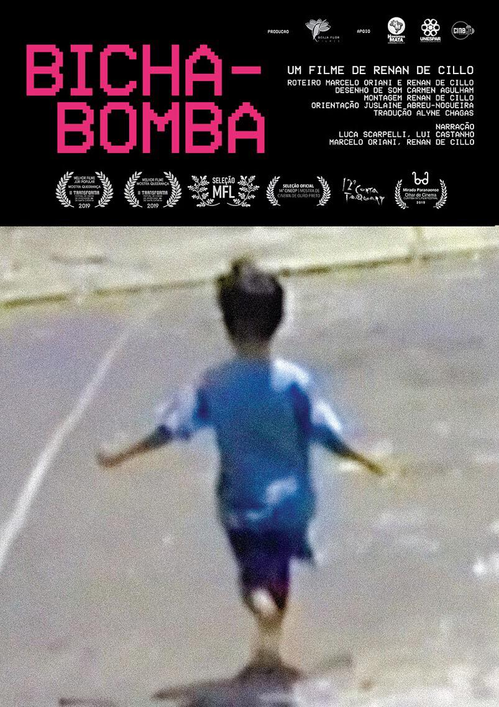
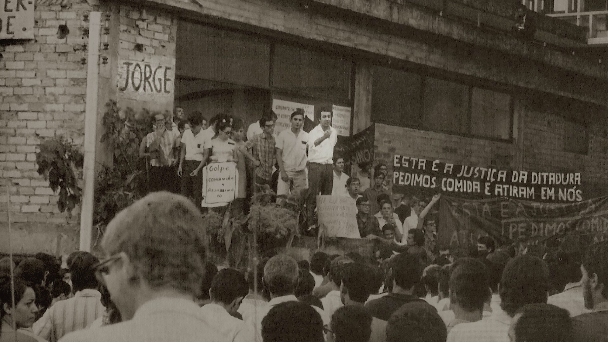
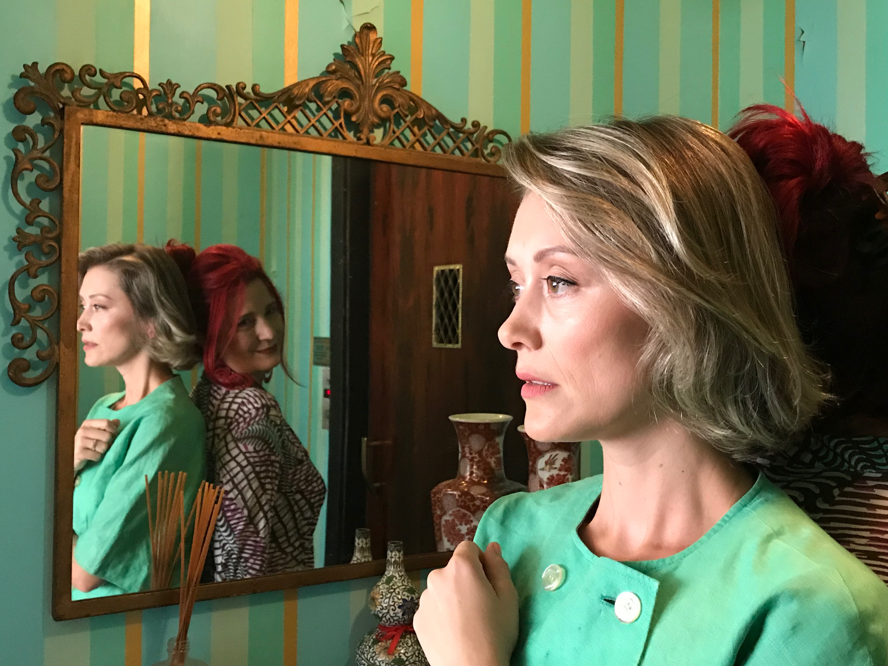
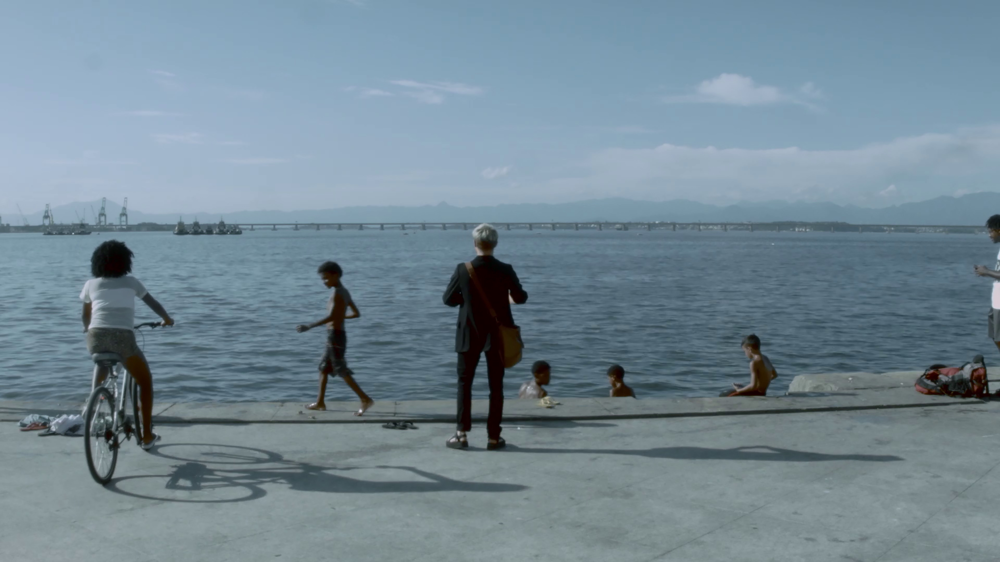
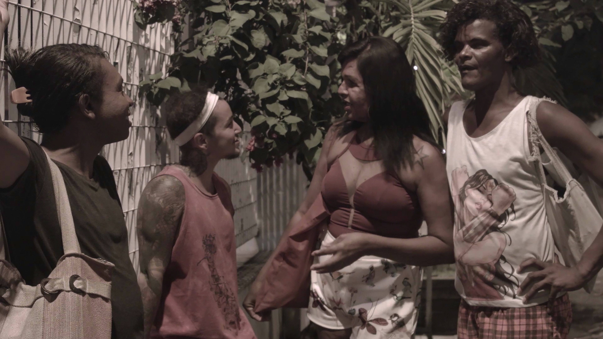
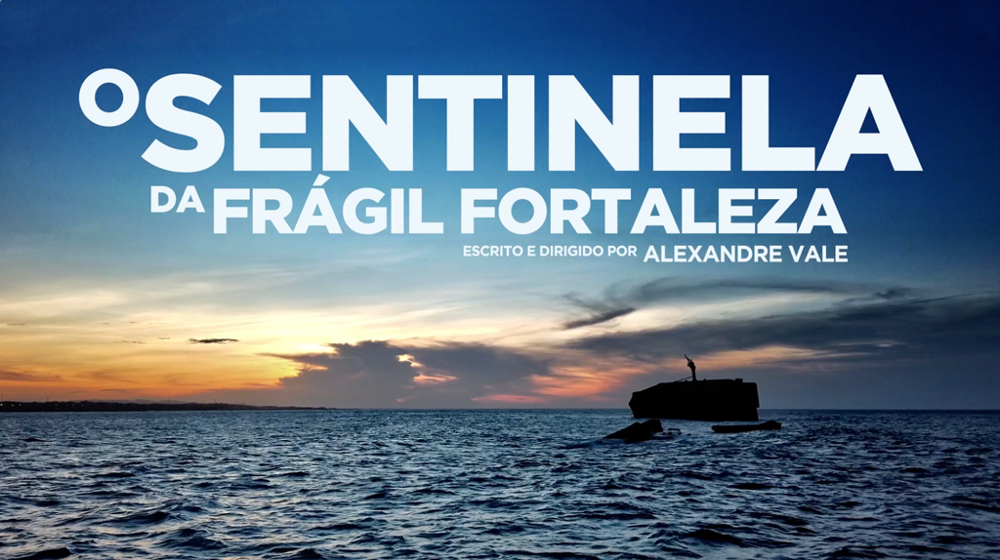

Vencedores
Júri Oficial
-
MACACO ALBINO – SISO, de Leandro Robles
Melhor Roteiro de Ficção
Sinopse:
Arrancar o dente do siso não é gostoso pra ninguém. Nem pro dentista, nem pro dono do dente. Porém, é necessário, e eles sabem disso. Nesta animação antológica e odontológica, Macaco Albino vai encarar uma dentista casca grossa e cheia de determinação, mas encantadora. -
BICHA-BOMBA, de Marcelo Oriani e Renan de Cillo
Melhor Roteiro de Documentário
 Sinopse:
Este filme “não é capaz de vingar as mortes, redimir os sofrimentos, virar o jogo e mudar o mundo. Não há salvação. Isso aqui é uma barricada! Não uma bíblia.” -
CODINOME BRENO, de Manoel Batista
Menção Honrosa
 Sinopse:
A memória possui gavetas que escondem partes do nosso passado, mas o medo e a saudade nos impedem de acessá-las. Para reconstruir o mosaico de memórias familiares, Manoel busca através da origem do nome de seu irmão, dos objetos de família e dos relatos dos amigos mais próximos, as peças que faltam nesse quebra-cabeça. A busca por esse nome termina por descortinar passagens da ditadura militar no Brasil.
Júri Popular
-
AMOR, de Fernanda Mazzeo
Melhor Roteiro de Ficção
 Sinopse:
O filme é uma livre adaptação do conto Amor, da Clarice Lispector. A história se passa durante um dia na vida de Ana, uma dona de casa angustiada, que tenta abafar seus desejos. Quando sai pra fazer compras, vê um cego na rua, ele está mascando chiclete, o que a perturba imensamente. -
Empate entre VINDE COMO ESTAIS, de Rafael Ribeiro e CODINOME BRENO, de Manoel Batista
Melhor Roteiro de Documentário
 Sinopse de VINDE COMO ESTAIS:
Novembro de 2018. Em um clima pós-eleições, Kit Redstone desembarca na devastada Cidade Olímpica, Rio de Janeiro. Escritor, diretor e performer teatral radicado em Londres, Kit é um homem transgênero e vem ao Brasil com o objetivo de produzir uma peça teatral com atores transexuais no país que mais mata travestis do mundo. Durante o processo, conhecemos esses artistas e suas perspectivas sobre como é ser LGBTQI+ e artista em um cenário apocalíptico para as minorias sociais e produtores de cultura no país.
Sinopse de CODINOME BRENO:
A memória possui gavetas que escondem partes do nosso passado, mas o medo e a saudade nos impedem de acessá-las. Para reconstruir o mosaico de memórias familiares, Manoel busca através da origem do nome de seu irmão, dos objetos de família e dos relatos dos amigos mais próximos, as peças que faltam nesse quebra-cabeça. A busca por esse nome termina por descortinar passagens da ditadura militar no Brasil. -
VINDE COMO ESTAIS, de Rafael Ribeiro
Prêmio ROTA/REDE SINA de Melhor Curta de Temática Social
 Sinopse:
Novembro de 2018. Em um clima pós-eleições, Kit Redstone desembarca na devastada Cidade Olímpica, Rio de Janeiro. Escritor, diretor e performer teatral radicado em Londres, Kit é um homem transgênero e vem ao Brasil com o objetivo de produzir uma peça teatral com atores transexuais no país que mais mata travestis do mundo. Durante o processo, conhecemos esses artistas e suas perspectivas sobre como é ser LGBTQI+ e artista em um cenário apocalíptico para as minorias sociais e produtores de cultura no país. -
O SENTINELA DA FRÁGIL FORTALEZA, de Alexandre Vale
Prêmio de Aquisição ROTA/KINOBOX
 Sinopse:
Um gigante dos mares descansa nas verdes águas da Praia de Iracema. Encalhado, despedaçado, corroído, o velho navio esfarela-se lentamente aos pés da cidade observando a rotina à sua volta. Mara Hope trava uma conversa solitária confessando seu amores, revoltas e desilusões por Fortaleza.
Descrição
A Mostra Competitiva de Curtas-metragens, que acontecerá nos dias 04 e 05 de outubro, tem o objetivo de promover, através de premiação, roteiristas estudantes e/ou iniciantes por seus curtas–metragens de ficção e documentários, e, com isso, dar visibilidade aos roteiros dos curtas selecionados durante o evento.
As inscrições ficam abertas de 01 de julho a 12 de agosto. A Seleção dos Finalistas será divulgada no dia 07 de setembro.
Tanto a Mostra quanto a Cerimônia de Premiação, que acontecerá no dia 06 de outubro, terão entrada franca, sujeita à lotação da sala.
Dúvidas e sugestões? Envie email para rotamostra2019@gmail.com.
Regulamento
MOSTRA COMPETITIVA DE CURTAS-METRAGENS DO ROTA 2019
1) OBJETIVO
1.1 A Mostra Competitiva de Curtas-metragens do III ROTA – Festival de Roteiro Audiovisual tem o objetivo de promover, valorizar, qualificar e premiar roteiristas
estudantes e/ou iniciantes por seus curtas–metragens de ficção e de documentários, e, com isso, abrir portas para sua carreira no mercado audiovisual.
1.1.1 Aceita-se a participação de estudantes e iniciantes maiores de idade desde que tenham no máximo 03 (três) roteiros de curtas-metragens filmados e exibidos em festival, mostra de cinema ou na web, não podendo ter nenhum roteiro de longa ou série já exibido em festival, mostra de cinema ou na web, o que deverá ser atestado através do Termo de Responsabilidade preenchido, assinado e anexado pelo concorrente no ato da inscrição.
2) DATA E LOCAL
2.1 O III ROTA – Festival de Roteiro Audiovisual acontecerá de 02 a 07 de outubro de 2019, na Cinemateca do MAM (Museu de Arte Moderna), na cidade do Rio de Janeiro, RJ. A exibição dos filmes da Mostra Competitiva de Curtas-metragens se dará nos dias 04 e 05 e a Cerimônia de Premiação, no dia 06.
3) INSCRIÇÕES
3.1 A inscrição para a Mostra Competitiva de Curtas-metragens do III ROTA – Festival de Roteiro Audiovisual é gratuita e estará aberta a partir das 00h00 de 1º de julho até as 23h59 de 12 de agosto de 2019.
3.2 Estão habilitados a participar estudantes e/ou iniciantes, maiores de 18 anos, brasileiros ou naturalizados, residentes dentro ou fora do Brasil, inscritos sob
pseudônimo.
3.3 Só serão aceitos curtas-metragens de ficção ou documentários, de até 20 (vinte) minutos, com produção ou co-produção brasileira.
3.4 Só serão aceitos filmes com roteiro escrito por brasileiros ou naturalizados, residentes ou não no Brasil, falados em português, podendo haver apenas expressões em outras línguas.
3.5 Cada candidato poderá inscrever até 03 (três) filmes de curtas-metragens de ficção e/ou documentário. Para cada filme será contabilizada uma nova inscrição.
3.6 Os filmes inscritos na Mostra Competitiva de Curtas-metragens do III ROTA – Festival de Roteiro Audiovisual deverão obedecer aos seguintes critérios:
a) Possuir até 20 (vinte) minutos de duração, incluindo créditos,
b) possuir formato digital em FULL HD para exibição,
c) não ter sido exibido publicamente antes do dia 1º de janeiro de 2018.
3.7 A inscrição dar-se-á através do seguinte processo:
3.7.1 Ler o Termo de Responsabilidade e, estando de acordo, preencher por inteiro, datar, assinar, imprimir, escanear, salvar no seu computador e anexar ao
Formulário de Inscrição da Mostra Competitiva de Curtas-metragens do III ROTA.
3.7.2 Preencher o Formulário de Inscrição da Mostra Competitiva de Curtas-metragens do III ROTA por completo. O não preenchimento dos campos obrigatórios impossibilita a conclusão da inscrição.
3.7.3 Anexar ao Formulário os seguintes documentos:
a) Termo de Responsabilidade, com data e assinatura do candidato;
b) RG, carteira de motorista, passaporte, carteira de trabalho ou outro documento com foto (frente e verso), para a devida identificação e comprovação da maioridade do
candidato;
c) Título e Link do curta de Vimeo ou YouTube. Caso seja privado com senha, lembre-se que precisa nos informar a senha;
d) Sinopse e especificações técnicas, tais como duração, ano de produção, Cidade, Estado, categoria, classificação etária, formato de finalização, formato de exibição, formato de janela de cópia de exibição, som, cor, Certificado de Produto Brasileiro (CPB), ficha técnica completa do filme;
e) 03(três) fotos do filme;
f) Cartaz do filme, caso tenha;
g) Trailer, caso tenha;
h) Carta de autorização do(s) coautor(es), escaneada em pdf, com data e assinatura do(s) mesmo(s), caso se appliqué.
3.8 Não será aceita nenhuma documentação incompleta e/ou enviada após o encerramento do prazo de inscrições.
3.9 O ROTA não se responsabiliza por qualquer situação decorrente da ausência de registro (do roteiro) na Biblioteca Nacional, conforme consta no Termo de
Responsabilidade.
3.9.1 A organização do III ROTA – Festival de Roteiro Audiovisual também se reserva o direito de prorrogar o prazo de inscrições, conforme julgue adequado, anunciando tal informação em seus canais de comunicação.
3.9.2 O ROTA não se responsabiliza por quaisquer despesas referentes à participação dos candidatos nesta Mostra.
3.9.3 O ROTA não se responsabiliza pelas consequências de quaisquer informações inverídicas que venham a ser apresentadas por candidatos
participantes desta Mostra Competitiva de Curtas-metragens do III ROTA, reservando-se a prerrogativa de desclassificar, a qualquer momento, os
responsáveis por quaisquer infrações ao presente Regulamento.
3.9.4 Ao inscrever seu(s) roteiro(s), o roteirista afirma anuência e concordância com os termos constantes deste Regulamento, afirmando ainda
que todas as informações fornecidas à organização do III ROTA por ocasião dessa inscrição são verdadeiras.
3.9.5 No ato da inscrição, o responsável pela mesma autoriza o ROTA, através de seus organizadores, a divulgarem a exibição do filme, por meio de fotos, frames
e/ou trailer do curta-metragem solicitados pelos organizadores da Mostra Competitiva de Curtas-metragens do III ROTA no ato desta inscrição, bem como
os nomes relacionados na ficha técnica.
3.9.6 Os realizadores encarregados das inscrições das obras audiovisuais devem ter a garantia da obtenção e liberação de direitos conexos relativos à inclusão de
obras musicais e audiovisuais e imagem e som de voz de indivíduos porventura incluídos na obra inscrita, sendo inteiramente responsáveis por quaisquer ônus
decorrentes da ausência de tais liberações.
4) PROCESSO SELETIVO
4.1 Habilitação: etapa em que serão verificadas se todas as informações e documentos foram enviados.
4.1.1 Apenas os projetos habilitados passarão para etapa de seleção e serão avaliados.
4.2 Seleção: a primeira etapa será feita por uma Comissão de Curadores formada por 05 (cinco) profissionais, que irá eleger no mínimo 12 (doze) filmes semifinalistas.
4.3 Compõem a Curadoria profissionais atuantes no mercado audiovisual, escolhidos pela organização do III ROTA – Festival de Roteiro Audiovisual. As decisões da Curadoria são soberanas e irrecorríveis.
4.4 Os filmes selecionados para a Mostra Competitiva de Curtas-metragens do III ROTA serão divulgados no site e nas páginas das redes sociais do ROTA (Facebook, Instagram e Twitter) até o dia 07 de setembro de 2019.
4.5 Durante a Mostra, que acontecerá nos dias 04 e 05 de outubro, a Comissão de Júri Oficial, composta por 05 (cinco) profissionais atuantes no mercado audiovisual, escolhidos pela organização do ROTA, avaliará os finalistas da Mostra Competitiva de Curtas- metragens do III ROTA.
4.5.1 Além do Júri Oficial haverá votação do Júri Popular feita pelo público presente às Mostras dos dias 04 e 05 de outubro de 2019.
4.6 A organização do ROTA reserva-se o direito de selecionar e premiar, ou não, quaisquer filmes, conservando para si todas as prerrogativas referentes a esses processos de seleção, inclusive a de não premiar ou selecionar os filmes para quaisquer prêmios.
4.7 Critérios de avaliação
4.7.1 Critérios que serão utilizados na avaliação dos filmes:
a) Qualidade da estrutura narrativa;
b) Qualidade da construção de personagens;
c) Qualidade da construção dos diálogos;
d) Originalidade
4.8 A Comissão da Curadoria será orientada a utilizar uma pontuação de 0-2,5 para cada um dos critérios de avaliação, estipulados neste Regulamento, com exceção do item d) Originalidade que receberá 0 (zero) ou 2.
5) PREMIAÇÃO
5.1 Os filmes selecionados concorrerão a 04 (quatro) prêmios:
a) Melhor Roteiro de Ficção do Júri Oficial: troféu e parecer resumido do Júri;
b) Melhor Roteiro de Documentário do Júri Oficial: troféu e parecer resumido do Júri;
c) Melhor Roteiro de Ficção do Júri Popular: troféu;
d) Melhor Roteiro de Documentário do Júri Popular: troféu.
5.2 Outras premiações paralelas poderão ser criadas e serão divulgadas através do site e páginas das redes sociais (Facebook, Instagram e Twitter) do ROTA.
5.3 A escolha dos premiados nas duas primeiras categorias citadas acima será feita pelo Júri Oficial e as duas últimas pelo público das sessões, o Júri Popular.
5.4 O Júri Oficial será composto por 05 (cinco) profissionais atuantes no mercado audiovisual e um estudante, escolhidos pela organização da
Mostra.
5.5 O resultado das premiações do Júri Oficial e do Júri Popular será divulgado na Cerimônia de Premiação que acontecerá no dia 06 de outubro de 2019,
e posteriormente publicado no site e páginas das redes sociais (Facebook, Instagram e Twitter) do ROTA.
5.6 A escolha dos 04 (quatro) filmes vencedores da Mostra, será de exclusiva responsabilidade do Júri Oficial. Estas decisões serão soberanas e irrecorríveis,
não cabendo recursos.
6) OUTROS
6.1 Situações excepcionais ou casos omissos a este regulamento serão decididos pela organização do ROTA.
7) CONTATOS
7.1 Dúvidas decorrentes do presente regulamento deverão ser encaminhadas ao e-mail: rotamostra2019@gmail.com
7.2 Para acompanhar as notícias do ROTA acesse:
Facebook: https://www.facebook.com/rotafestival/
Site: http://rotafestival.com
Instagram: @rotafestival
Twitter: @rotafestival
Ver mais...
Fechar